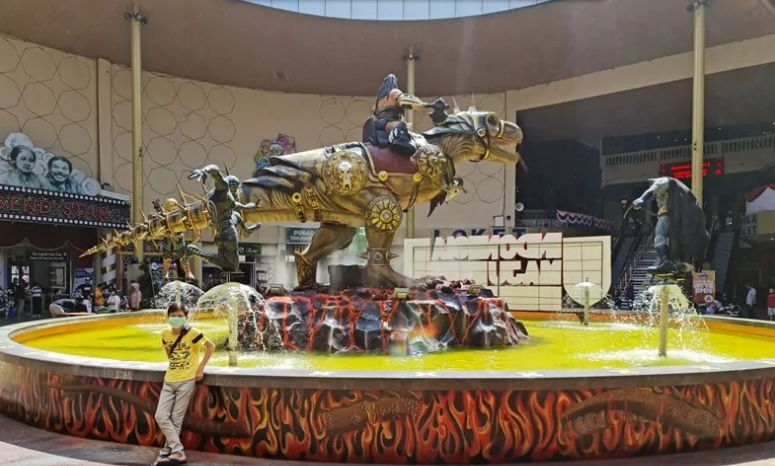
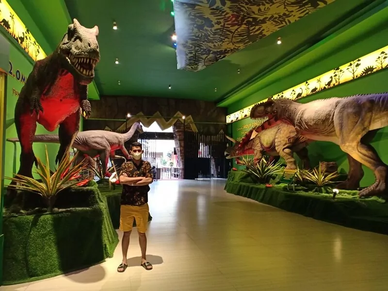
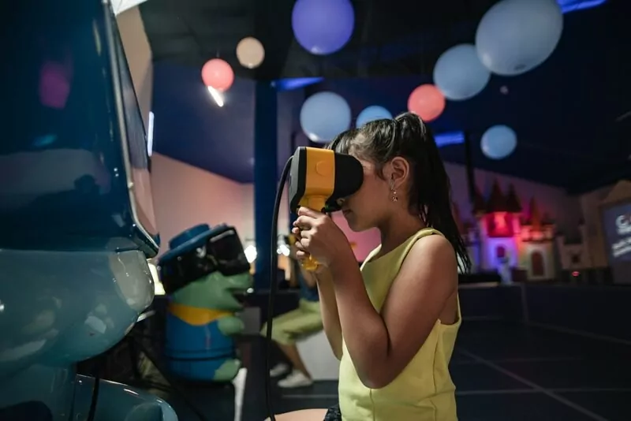
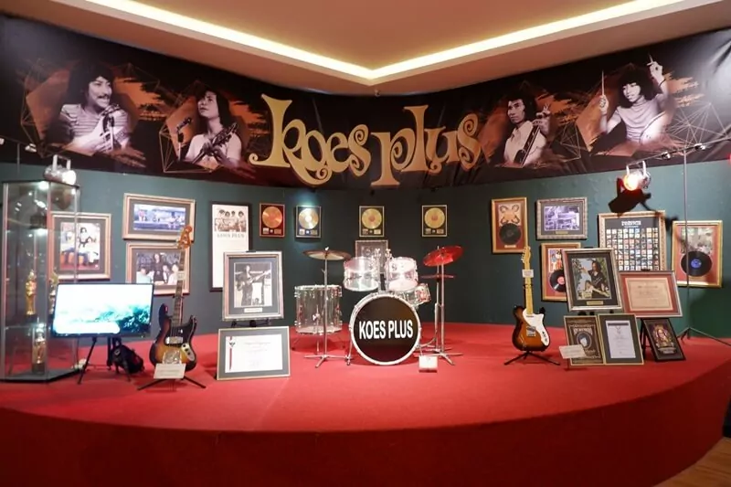
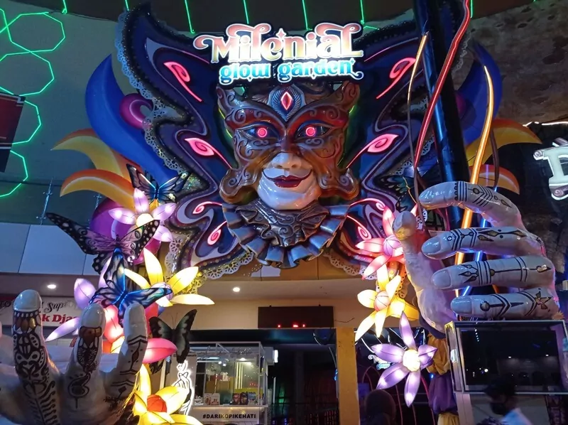
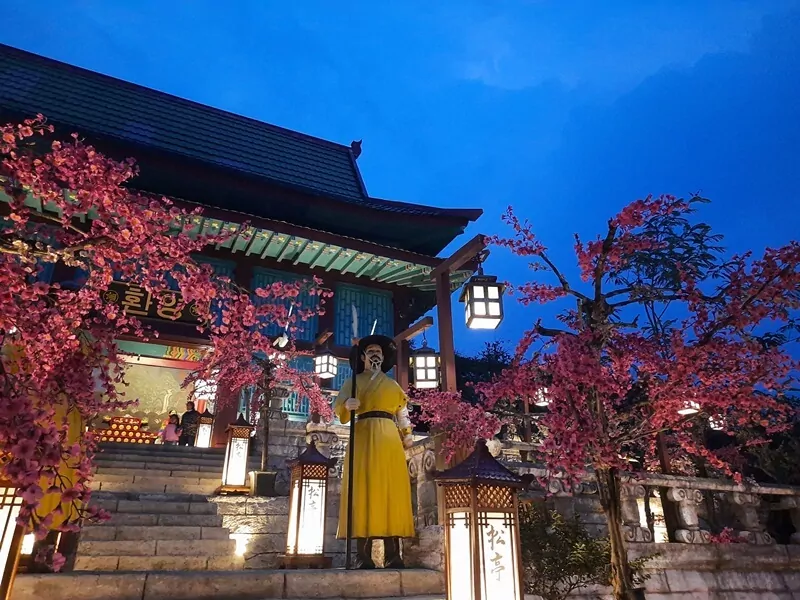

JATIM PARK III MALANG
Jatim Park 3 atau Jawa Timur Park 3 merupakan theme park keren yang wajib kamu kunjungi ketika berada di Kota Batu, Jawa Timur.
Seperti sudah kita ketahui bersama Jatim Park terdiri dari Jatim Park 1, Jatim Park 2, Jatim Park 3, dan yang paling baru ialah Jatim Park 4. Setiap lokasi memiliki ikon dan ciri khasnya masing-masing. Untuk Jatim Park 3 sendiri ikonnya ialah Dino Park, yang akan memberikan kamu informasi lengkap tentang kehidupan Dinosaurus.
Jatim Park 3 hadir dengan tehnologi yang canggih namun dibalut dengan suasana alam yang sejuk. Pas banget untuk wisata bersama keluarga, karena ramah anak. Sangat disayangkan saat ini wisata Jatim Park 3 masih ditutup sementara, hingga batas waktu yang belum ditentukan. Berikut deskripsi atau gambaran mengenai Jatim Park 3 yang dapat kami sampaikan.
Lokasi dan Alamat Jatim Park 3
Lokasi dan alamat dari Jatim Park 3 ini berada di Jl. Raya Ir. Soekarno No. 144, Beji, Kecamatan Junrejo, Kota Batu, Jawa Timur.
Rute Menuju Jatim Park 3
Rute menuju Jatim Park 3 sangat mudah untuk dituju, serta dapat dilalui oleh kendaraan roda dua maupun roda empat. Kualitas jalannya pun mulus, kamu ngga akan menemukan tantangan yang berarti. Dari Kota Malang tinggal mengarahkan kendaraanmu menuju Kota Batu, dengan melalui Jalan Raya Tlogomas. Lokasi Jatim Park 3 berada sebelum Kota Batu.

Tiket Masuk Jatim Park 3
Tiket masuk Jatim Park 3 terdiri dari:
a. Rp. 120.000,- untuk wahana Dino Park dan The Legend Star pada hari Senin hingga Kamis
b. Sedangkan untuk weekend sebesar Rp. 150.000,-
Ada pula pilihan harga tiket lainnya, kamu dapat mencari informasi lengkapnya di Jatim Park 3.
Jam Buka Jatim Park 3
a. Jam operasional dari Jatim Park 3 dibuka setiap hari Senin hingga Minggu.
b. Dibuka mulai pukul 11.00 hingga 19.00 waktu setempat.
Fasilitas Park 3
Fasilitas yang ada di Jatim Park 3 dibilang sudah lengkap, hal tersebut ditunjukkan dengan adanya:
a. Area parkir kendaraan yang cukup luas,
b. Information Center,
c. Baby Care,
d. Food Court dan Cafe,
e. Mushola,
f. ATM Center,
g. E-Bike Station,
h. Toilet umum, dan masih banyak lagi yang lainnya.
7 Atraksi Terbaik Di Jatim Park 3
Jatim Park menjadi andalan wisata modern yang ada di Kota Batu, khusus untuk Jatim Park 3 ini memiliki banyak sekali atraksi atau wahana seru yang ngga boleh kamu lewatkan.Berikut 7 wahana atau atraksi andalan yang ada di Jatim Park 3:
1. Dino Park
Wahana yang pertama bernama Dino Park, sesuai namanya kamu akan mendapatkan banyak sekali informasi tentang semua hal yang berkaitan dengan Dinosaurus. Untuk para Dinoholic pasti akan bersemangat ketika mengunjungi Dino Park, yang paling seru ialah ketika kamu memasuki wahana berkeliling 5 zaman dengan menggunakan sebuah kereta layaknya roller coaster.
Beberapa atraksi pilihan ketika berada di Dino Park :
- The 5 Age Of Dinosaurus,
- Triceratops,
- The Rimba,
- Ice Age,
- Live With Dino,
- Jembatan Akar, dan
- Active Fun House (Dinotopia).
2. The Legend Stars
Wahana seru yang kedua ialah sebuah tempat yang mirip dengan Museum Madame Tussauds, yang berisikan
tokoh-tokoh dunia yang terbuat dari lilin.
The Legend Stars merupakan lokasi pertama yang ada
di Indonesia dengan menyajikan ratusan patung lilin dari tokoh-tokoh serta artis-artis dunia.
Pengunjung yang datang banyak yang mengabadikan momen ketika bersama dengan tokoh yang diimpikannya.
3. Fun Tech Plaza
 Fun Tech Plaza merupakan sebuah atraksi atau wahana yang berbalut teknologi dan dijamin seru banget, berikut beberapa atraksi yang bisa kamu coba:
- Aqua Sketch
- Giant Piano
- Zumba Dance
- Laser Action
- Virtual 6
- Geosand Map
- Bomb Hunter
Tiket masuk Fun Tech Plaza yakni Rp. 40.000,- di weekday dan Rp. 50.000,- untuk weekend dan hari libur lainnya.
4. Museum Musik Dunia
 Untuk kamu para pecinta musik, lengkapi pengetahuan bermusik kamu dengan mengunjungi Museum Musik Dunia di Jatim Park 3.
Di sini kamu akan menemukan berbagai alat musik yang berasal dari Indonesia hingga mancanegara.
Selain alat musik, kamu juga akan mendapatkan wawasan tentang alat-alat musik kebanggan dari berbagai benua, mengenal genre
musik, serta ada pula memorabilia dan simple audio dari masing-masing musisi.
Selain itu ada pula berbagai koleksi alat musik klasik dan music box yang berasal dari puluhan tahun yang lalu. Pokoknya pengetahuan musik kamu akan bertambah deh.
Museum Musik Dunia dibuka mulai pukul 11 siang hingga pukul 7 malam, dengan harga tiket masuk sebesar Rp. 40.000,-
untuk hari Senin hingga Kamis dan Rp. 50.000,- untuk hari Jumat hingga Minggu serta hari-hari libur lainnya.
5. Milenial Glow Garden
 Luas dari Milenial Glow Garden sekitar 2 hektar, dan terbagi kedalam dua area yakni outdoor dan indoor. Untuk area indoor terdapat sedikitnya 16 titik dengan tema yang berbeda-beda.
Dengan menyajikan perpaduan antara teknologi proyeksi dan sensor sehingga menampilkan pencahayaan yang interaktif. Sehingga menjadikannya sebagai tempat yang kece banget untuk berfoto.
Harga tiket masuk Milenial Glow Garden untuk hari-hari biasa sekitar Rp. 60.000,- dan Rp. 80.000,- di akhir pekan atau hari libur lainnya. Mulai dibuka setiap pukul 11.30 hingga 20.30 waktu setempat.
6. Circus Magic
Atraksi atau wahana selanjutnya bernama Circus Magic, yakni sebuah rumah kaca yang dibalut dengan tema sirkus. Kamu harus mencari jalan keluar yang tepat ketika berada di wahana yang satu ini.
7. Keliling Dunia
Atraksi seru yang selanjutnya ialah mengelilingi dunia dalam satu waktu, negara-negara tersebut diantaranya:
- Kampung Jepang
- Little Amsterdam
- Taj Mahal dan bangunan-bangunan lain ala-ala India
- Korea
- Istana Negara
- White House
Wahana yang satu ini menjadi salah satu lokasi favorit pengunjung untuk berfoto, kamu akan mendapatkan suasana yang sama seperti di negera asalnya.